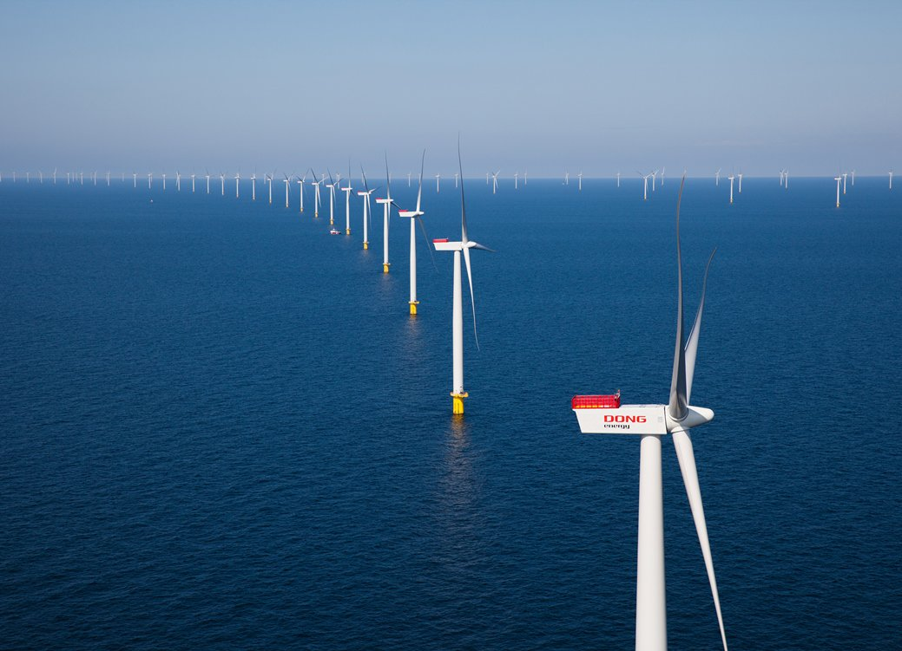

En este proyecto, hemos diseñado y construido una maqueta de molino de viento con el propósito de generar corriente alterna y encender una luz LED. Esta maqueta no solo representa una solución sostenible para la generación de energía, sino que también tiene una conexión interesante con el mundo de la informática.
⚡ Símbolo de Riesgo Eléctrico
Nuestra maqueta de molino eólico no solo representa una fuente de energía sostenible, sino que también destaca la importancia de la tecnología informática en la optimización y supervisión de sistemas de energía. A través del uso de sensores y software de control, podemos monitorear y mejorar continuamente la eficiencia de nuestro molino, lo que demuestra cómo la informática se integra de manera crucial en la generación de energía limpia para un futuro más sostenible.
Los molinos eólicos, a gran escala, han revolucionado la forma en que generamos energía en todo el mundo. Desde parques eólicos en las vastas llanuras de Estados Unidos hasta granjas de viento en Europa, estos gigantes de la energía eólica están cosechando la fuerza del viento para producir cantidades significativas de electricidad. Aunque nuestro proyecto es una maqueta en comparación con estas enormes estructuras, refleja el mismo principio fundamental de convertir la energía cinética del viento en corriente alterna utilizable. La tecnología y la informática desempeñan un papel crucial en la supervisión y el control de estas enormes turbinas eólicas para garantizar un rendimiento óptimo y una 